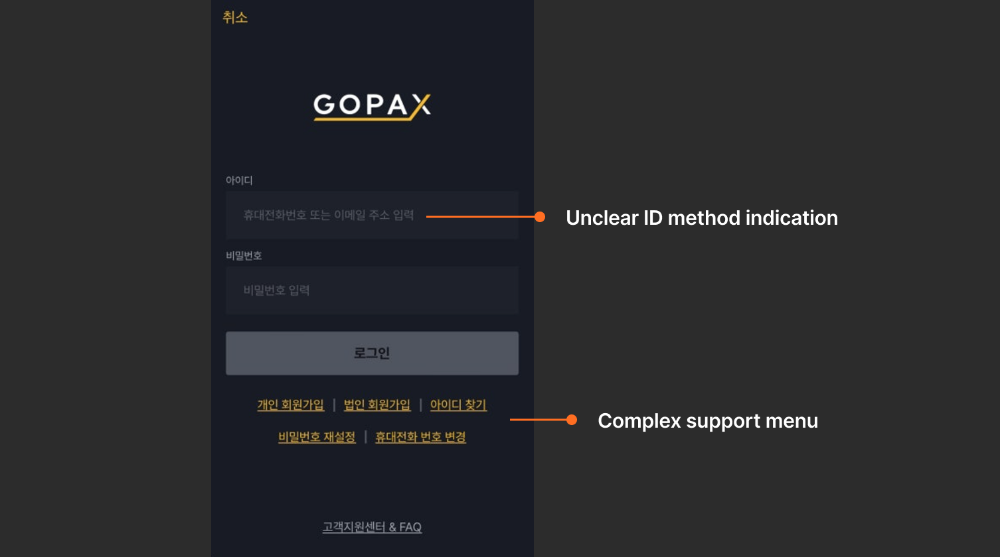
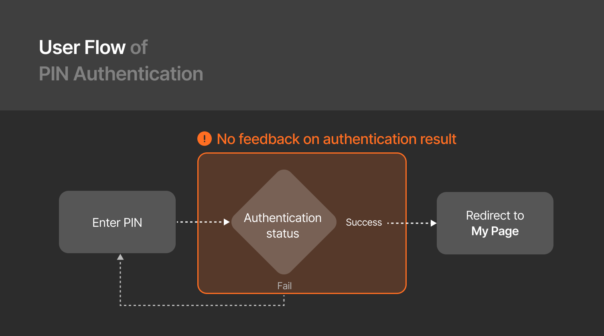

PROJECT OVERVIEW
PROBLEM
The login process lacks design consistency across platforms (mobile, web), features a complex support menu, and provides insufficient feedback during PIN authentication, leading to login issues.
SOLUTION
"Optimized the login process by removing unnecessary elements based on GA click data and applied micro-animations in the authentication flow.”
PAIN POINTS
Identified user pain points through insights from the CX team and GA.
1. Log in page

- ID input field supports two methods: email/ phone number. However, this is only indicated through a placeholder that disappears when tapped.
- Complex support menu: Sign up button is divided into personal and business accounts. GA data shows that business sign-ups have a click rate of less than 1%.
2. PIN authentication page

- Lack of immediate feedback after PIN authentication: There is no immediate feedback after entering the PIN, making it difficult for users to recognize whether authentication was successful.